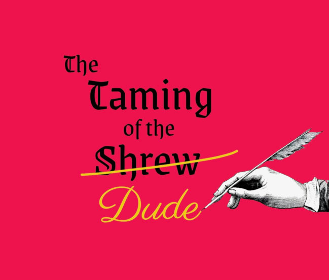

Please join us at auditions for a *GENDER REVERSED* production of “The Taming of the Shrew”
presented by Brevity Shakespeare!

Location:
Ypsilanti Performance Space - The YPSI
218 N. Adams St.
Ypsilanti, MI 48197
Audition Times:
Sunday, March 9th, 7-9pm
Monday, March 10th, 7-10pm
CALLBACKS: Wednesday, March 12th, 7-10pm
Actors will not be expected to stay for the entire audition - drop by when you are able! Please
only attend one night of auditions. Callbacks are invitation only.
Details:
Actors will be put into groups to perform monologues and participate in a few short improv activities. See more
details below.
The cast list will be decided by Friday, March 14th and readthrough will be Monday, March 17th 7-9:30pm
**If you are unable to make these audition dates and/or have any questions, please contact Veronica Long (the
director) at veronicamlong@gmail.com or (734) 478-1362**
What to Prepare and Expect for Auditions
Actors should prepare a one minute Shakespearean monologue or sonnet. Memorization is preferred but not
mandatory. Sample monologues available upon request and provided at auditions.
Actors will NOT be required to do accents for the show. Please do not prepare monologues with an accent.
Actors should come dressed to move (we also recommend bringing a water bottle).
Actors should have their list of scheduling conflicts for March 17th through June 8th. There will be days
off for holidays, and rehearsals will typically be Sunday-Thursday at 7pm until it gets closer to the show.
Actors are encouraged to bring a resume and/or headshot, although neither are required.
Performances:
Friday, May 30 at 7:30pm
Saturday, May 31 at 7:30pm
Sunday, June 1 at 2pm
-
Friday, June 6 at 7:30pm
Saturday, June 7 at 7:30pm
Sunday, June 8 at 2pm
Ypsilanti Performance Space - The YPSI
218 N. Adams St.
Ypsilanti, MI 48197
More About This Production
No previous theatrical experience (Shakespeare or otherwise) is required to audition. We love when people
want to try something new!
Actors will not be restricted to roles based on traditional ages, or races and/or ethnicities assigned to
the characters.
The script has been streamlined from the original length and some language edited for gender reversal. The
script we will be using is available upon request.
Rehearsals will be at Ypsilanti Performance Space (218 N. Adams St, Ypsi).
All positions are unpaid and there is no cast participation fee.
Actors and crew must be 18+.
Please Note
The characters of Bianco, Hortensia, Lucentia, Petruchia, and Trania have lines in Italian.
The characters of Bianco and Lucentia have lines in Latin.
The characters of Nataniele & Petruchia need to be comfortable (at least stage) kissing.
SYNOPSIS
The rocky courtship of two handsome young men is at the center of our gender reversed version of The Taming of
the Shrew.
Three women gadding about Italy are taken with the lovely and charming Bianco. They resort to a variety of
disguises and farcical strategies to win his sweet heart.
Another young woman, Petruchia, aims to win the hand of Bianco’s older, angrier brother, Nataniele, through a
campaign of misdirection and gaslighting.
Two attentive parents try to advocate for their children, and two attentive servants try to advocate for their
bosses, with varying degrees of success…
CHARACTER DESCRIPTIONS
*Our script calls for 7 Female and 3 Male characters, with all original character names noted in parenthesis*
BAPTISTA (Baptista), F
Wealthy merchant of Padua. Mother to Nataniele and Bianco.
BIANCO (Bianca), M
Younger son of Baptista. Very eligible.
GREMIA (Gremio), F
Wealthy merchant of Padua. Sweet on Bianco.
GRUMIA (Grumio), F
Servant to Petruchia, and her co-conspirator.
HORTENSIA (Hortensio), F
Paduan scoundrel. Sweet on Bianco. Friend to Petruchia.
LUCENTIA (Lucentio), F
Pisan student. Sweet on Bianco. Daughter of Vincentio.
NATANIELE (Katherina), M
Elder son of Baptista. A handful.
PETRUCHIA (Petruchio), F
Veronese mercenary. Courting Nataniele for the money.
TRANIA (Tranio), F
Servant to Lucentia, and her co-conspirator.
VINCENTIO (Vincentio), M
Wealthy merchant of Pisa. Father to Lucentia.
**Brevity Shakespeare is an Ypsilanti-based theatrical organization founded in 2019.
We are dedicated to making Shakespeare accessible for all. To this end, we are committed to ensuring that his
tremendous stories aren’t only told by old white dudes, but instead assembling casts that are better reflective
of our community at large.
Our four previous productions are “Hamlet,” “As You Like It,” “Richard III,” and “The Merry Wives of Windsor” as
well as staged readings of “Julius Caesar”**